The powerlaw and quadratic models allow flow in only one direction at a time. Flows through large openings (e.g. doorways) tend to be more complex with the possibility of flows in opposite directions in different parts of the opening. The temperature and resulting density differences between two rooms may mean that the stack effect causes a positive pressure difference at the top of the doorway and a negative pressure difference at the bottom (or vice versa) allowing a two-way flow in the opening. A summary of research on heat transfer through doorways is presented in [Barakat 1987]. Most research has attempted to develop dimensionless correlations (using Nusselt, Prandlt, and Grashoff numbers) of the form
|
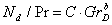 |
(63) |
where b is approximately 0.5 and C lies between 0.22 and 0.33 depending on the temperature difference used for the correlation. It has been shown that such a heat transfer is equivalent to an airflow which can be modeled by powerlaw elements by dividing the total opening into several smaller openings having the same total area but configured to properly account for the magnitude and direction of airflows at different heights in the opening.
An alternative approach is to create a single airflow element which accounts for the flow over the entire opening. A simple theory which estimates the stack induced air flow through a large opening in a vertical partition is given in [Brown and Solvason 1962]. This model of a doorway tends to be faster than the multiple opening approach. However, it also complicates the assembly process for the Jacobian matrix because one or two flows may exist. More importantly, development of the doorway element model requires knowledge of the vertical temperature profile used in the node model (here assumed to be constant) in order to compute the pressure difference as a function of height across the opening. This requirement compromises the independence of the modularity of airflow network program.
By assuming that the air density in each room is constant, the hydrostatic equation is used to relate pressures at various heights in each room:
|
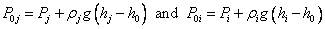 |
(64) |
|
|
(65) |
where
P0j, P0ipressure in zones j and i at y = 0, the reference elevation of the opening,
rj, riair densities of zones j and i,
Pj, Pireference pressures of zones j and i,
hj, hireference elevations of zones j and i, and
h0elevation of the center of the opening.
Following [Brown and Solvason 1962] it is assumed that the velocity of the airflow as a function of height is given by the orifice equation:

|
(66) |
where
Cd = discharge coefficient, and
r = density of the air going through the opening.
The opening, H high by W wide, may be divided into multiple openings each representing a thin horizontal strip Dy high and W wide. The mass flow through each strip would be

|
(67) |
The coefficient for the powerlaw model (20) for each sub-opening is thus given by

|
(68) |
An approximate model can be constructed by considering an opening between two zones which have no flow paths to any other zones. Then the flow in each direction must be equal and P0j = P0i. Integration of equation (66) from y=0 to y=H/2 using (65) to compute DP gives the flow through the top half of the opening.

|
(69) |
This is equivalent to a simple powerlaw model with
|
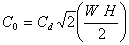 |
(70) |
(a simple orifice with one half the total opening area) placed at an elevation of y = 2H/9. The two opening model is completed with an identical opening at y = -2H/9 elevation allowing an equal flow in the opposite direction. Since the orifice is being modeled with simple orifice openings, any additional pressure drop between the zones due to other forces is included in the two opening model. The model becomes less accurate as the neutral plane shifts from the center of the opening.
A third approach is to create a single airflow element which accounts for the flow over the entire opening. Begin by defining the neutral height, Y, where the velocity of the air is zero. From equation (66) this must occur when Pj(y) = Pi(y). From equations (65) this must be
|
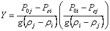 |
(71) |
If |Y| < H/2, there is two-way airflow through the opening. If rj = ri, the neutral height cannot be computed, but, since there is no possibility of two-way flow, the opening can be considered a simple orifice opening.
Define Drºrj - ri and a transformed height coordinate z º y - Y. Then the pressure difference across the opening is given by
|
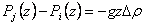 |
(72) |
The mass flow through the opening above the neutral height is given by
|
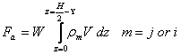 |
(73) |
and the mass flow below the neutral height by
|
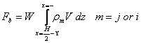 |
(74) |
Whether the subscript m should be j or i depends on the direction of flow. Integration of equations (73) and (74) gives several different solutions for the airflow depending on the value of Y and the sign of Dr. Defining:
|
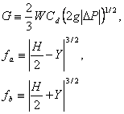 |
(75) |
gives the following equations for flows.
| Case | Dr < 0 | Dr < 0 | |
| 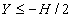 |
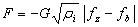 |
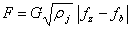 |
(76) |
| 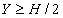 |
(77) | ||
 |
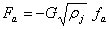 |
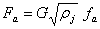 |
(78) |
 |
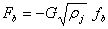 |
(79) |